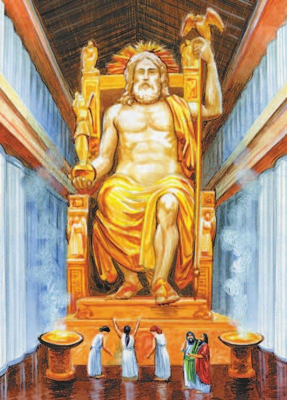
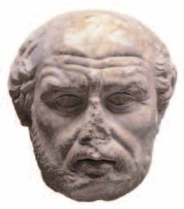
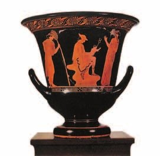
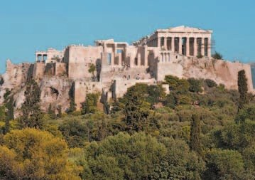
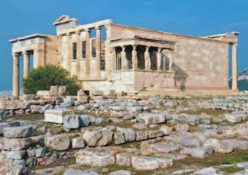
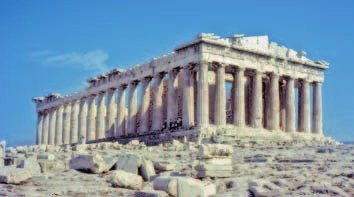
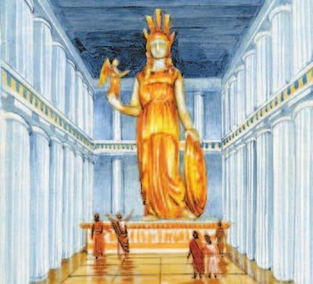

Архитектура
В V—IV веках до н. э. культура Греции так расцвела, что тысячи лет потом ей подражали. Это время называют .
Новые города строили по одному плану: кварталы прямоугольные и одинаковые, улицы прямые.
В городах строили храмы и общественные здания. Храм ставили на ступенчатое каменное возвышение. Крыша — двускатная, как у домика.
Храмы украшали колонны. Вид колонн называют . Сначала строили мощные колонны без всяких украшений — их сравнивали с суровыми воинами. Позднее — стройные , с каменными завитками наверху. Их сравнивали с девушками.
Треугольник между крышей и карнизом — — украшали рельефами и статуями. А ряды колонн под крышей — — давали тень и спасали от жары.
Культура Древней Греции V (5) — IV (4) веков до н. э. стала эталоном и образцом для подражания на многие тысячелетия. Время расцвета древнегреческой культуры называют эпохой классики.
Строительство новых городов производилось по единому плану: кварталам города придавали прямоугольную форму, их возводили одинаковыми по размеру, с прямыми улицами.
В городах Греции строили храмы и общественные здания. Храмы возводили на ступенчатом каменном возвышении прямоугольной формы. Крыша была двускатная. Храмы сначала украшали высокие дорические колонны (дорический ордер), позднее — более стройные ионические колонны (ионический ордер) с изящными каменными завитками вверху. Строгие дорические колонны, выполненные без всяких украшений, сравнивали с мужественными, суровыми воинами, а нарядные ионические — с девушками. Треугольное пространство между двускатной крышей и карнизом здания — фронтон — украшали рельефами и скульптурами. Многочисленные портики с колоннами служили защитой от зноя.
- Как ты думаешь, какую роль в восприятии архитектуры храмов и зданий играли колонны?
1. Вход на Акрополь — Пропилеи — сделали с дорическими колоннами, а храм Ники рядом — с ионическими (раздел 3). Зачем такая пара? Свяжи с тем, с кем сравнивали колонны.
2. Зачем грекам столько портиков? Вспомни природу Греции из §20.

Скульптура и живопись
Во времена Перикла говорили: «статуй в Афинах больше, чем жителей». Статуи стояли везде — и в домах, и на улицах.
Их делали из дерева, мрамора или металла и раскрашивали под цвет кожи. Иногда статуи одевали в дорогие одежды, а в глаза вставляли драгоценные камни. Белыми мы видим их сейчас потому, что краска за тысячи лет сошла.
Лучшие скульпторы — Поликлет (его статуя «Копьеносец»), Пракситель («Афродита Книдская») и . Фидий сделал двенадцатиметрового Зевса для Олимпии — одно из чудес света.
Живопись греков мы знаем по росписям на вазах. В VI веке до н. э. фон оставляли цвета глины, а фигуры покрывали чёрным лаком. Получались вазы.
В конце VI века сделали наоборот: фон чёрный, а фигуры цвета глины. Это вазы.
Ты делала граттаж и расписывала керамику — значит, знаешь, как это: царапаешь по чёрному, и проступает светлая линия.
А вот спор двух художников, Зевксиса и Паррасия. Каждый принёс картину под покрывалом. Зевксис открыл свою — там виноград, такой настоящий, что слетелись птицы клевать. «Теперь ты открой покрывало!» — сказал он Паррасию. «Не могу, — ответил тот. — Оно у меня и нарисовано». Зевксис признал: «Ты победил! Я обманул птиц, а ты — художника».
Во времена Перикла говорили, что «статуй в Афинах больше, чем жителей». Скульптурные изображения встречались повсеместно: и в помещениях, и на улицах. Обычно скульптуру, выполненную из дерева, мрамора или металла, раскрашивали, придавая ей оттенок человеческой кожи. Иногда статуи облачали в дорогие одежды, а в глаза вставляли драгоценные камни. Среди лучших образцов древнегреческой скульптуры — «Копьеносец» Поликлета, «Афродита Книдская» Праксителя и многие другие.
Образцами древнегреческой живописи являются росписи на вазах. В VI (6) веке до н. э. художники оставляли фон вазы цвета глины, а контуры фигур сначала процарапывали, а потом покрывали чёрным лаком. Его наносили на естественный красноватый цвет глиняных сосудов и получали чёрнофигурные вазы.
Любопытные детали. В V (5) веке до н. э. в живописи соперничали художники Зевксис и Паррасий. Как-то они поспорили, кто лучше напишет картину. Собрался народ, вышли двое соперников, у каждого в руках была картина под покрывалом. Зевксис отдёрнул покрывало — картина изображала виноградную гроздь, столь похожую на настоящую, что птицы слетелись её клевать. Народ рукоплескал. «Теперь ты отдёрни покрывало!» — сказал Зевксис Паррасию. «Не могу, — ответил тот, — оно-то у меня и нарисовано». Зевксис признал победу своего соперника: «Ты победил! Я обманул глаз птиц, а ты обманул глаз живописца».

- Какие новые приёмы применяли греческие мастера?
3. Статуи раскрашивали под цвет кожи, а Зевксис нарисовал виноград, который клевали птицы. Чего добивались греческие мастера — и в скульптуре, и в живописи?
4. Вспомни §10: по каким правилам лепили статуи в Египте? Чем греческие статуи на них не похожи?

Афинский Акрополь
В V веке до н. э. главным городом Эллады стали Афины. Перикл пригласил туда лучших архитекторов, художников и скульпторов.
Акрополь разрушили персы в 480 году до н. э. (§28). В 449 году — в тот же год, когда заключили мир с персами, — Народное собрание решило его перестроить. Значит, больше 30 лет Акрополь стоял в руинах.
Новый Акрополь задумали как памятник победе над персами — такой красивый, чтобы Афины затмили все другие города.
Входили на Акрополь через ворота — . Это строгий мраморный портик с дорическими колоннами, в память о грозных боях. Рядом — лёгкий храм с ионическими колоннами, храм богини победы . Её статую сделали без крыльев — чтобы победа больше никогда не улетала из Афин.
Дальше на главной улице стояла бронзовая Афина Воительница работы Фидия — 9 метров, со щитом и копьём. Её видели издалека все, кто подплывал к Афинам и заходил в порт Пирей. Лицом богиня смотрела на север — откуда пришли персы.
Слева от Афины — храм . По легенде, здесь Афина и Посейдон спорили, кто будет покровителем города. Посейдон ударил трезубцем — и появился колодец с солёной водой. Афина подарила людям оливу. Победила Афина, и город назвали её именем. Оливки ты видела в греческом салате — это подарок Афины.
Крышу одного из портиков Эрехтейона держат не колонны, а — каменные девушки.
Главный храм — , в честь Афины. Строил его архитектор . Со всех сторон храм окружают дорические колонны. Внутри стояла Афина Парфенос, то есть Дева, работы Фидия — больше 10 метров, из золота и слоновой кости. Под эту статую рассчитали размеры всего храма.
Официально храм назывался храмом Афины Полиады — Афины-защитницы города. За свою долгую жизнь Парфенон побывал греческим храмом, православной церковью, католическим собором и мечетью.
Центром духовной и творческой жизни Эллады в V (5) веке до н. э. стали Афины. Здесь по приглашению Перикла работали известные архитекторы, художники и скульпторы. Афинский Акрополь задумывался как величественный памятник, символизировавший вклад, который внесли Афины в победу Греции над Персидской державой. Великолепие Акрополя должно было помочь Афинам затмить все прочие города Эллады.
На Акрополь входили через ворота — Пропилеи. В память о грозных сражениях они были созданы в виде мраморного портика в дорическом стиле. Суровую простоту Пропилей оттенял лёгкий и изящный храм Бескрылой Ники с ионическими колоннами. Афиняне специально создали скульптуру богини победы Ники без крыльев, чтобы она после победы над персами никогда уже не покидала их город.
Далее на главной улице Акрополя возвышалась бронзовая скульптура Афины Воительницы работы Фидия. Девятиметровая фигура богини со щитом и копьём была видна издали каждому, кто прибывал в Афины с моря, заходя в порт Пирей. Она символизировала защиту полиса олимпийскими богами и служила грозным предупреждением любому, кто вынашивал планы нападения. Лицо богини было повёрнуто в сторону севера, откуда пришли персы.
Храм Эрехтейон располагался слева от Афины. Его построили на месте, где, по легенде, Афина и Посейдон спорили о том, кому из них быть покровителем города. В храме находился колодец с солёной водой, согласно мифу, пробитый трезубцем Посейдона. У стены храма росла олива, которую, по преданию, подарила Афина жителям города. Богиня выиграла спор и стала покровительницей города, который назвали её именем.
Храм Парфенон воздвигли в честь богини Афины. Руководил строительством храма архитектор Калликрат. Это самое величественное сооружение на Акрополе со всех сторон окружали дорические колонны. Внутри храма находилась скульптура Афины Парфенос (Девы) работы Фидия.
Обычно этот храм называют Парфеноном, производя его название от эпитета богини Афины — Дева (по-древнегречески Парфенос). Это не совсем верно, так как данный эпитет характерен для более позднего времени. Официально храм назывался храмом Афины Полиады, то есть Афины — защитницы города, «Градской». За время своего существования Парфенон был и древнегреческим храмом богини Афины-Девы, и православной церковью, и католическим собором, и мусульманской мечетью.



- Какой был главный храм, находившийся на Акрополе?
5. Нику сделали без крыльев, а Афину Воительницу повернули лицом на север. Что общего у этих двух решений?
6. Почему в споре победила Афина? Подумай, что полезнее жителям: солёный колодец или олива. Вспомни §20.
7. Кто строил Акрополь? Найди ответ в подписи к фотографии и свяжи с §29.
Подведём итоги
- Какие архитектурные приёмы использовали афинские мастера?
- Чем был Акрополь для афинян?
- Какие храмы находились на афинском Акрополе?
- Сравни скульптуры греческих мастеров со скульптурами Древнего Востока. В чём их различия?
Прочитай современный текст о работе древнегреческих мастеров и ответь на вопросы.
В мастерской художника все сосуды расписывались чёрным лаком по краснорыжей обожжённой глине. Более старая манера росписи была чёрнофигурная, более новая — краснофигурная.
При чёрнофигурной росписи фон оставался красным, фигуры покрывались чёрным, а по чёрному фону процарапывались светлые линии складок одежды и черт лица. При краснофигурной росписи, наоборот, фон заливался чёрным, а фигуры оставлялись красными, и на них наносились чёрные линии складок и прочие подробности. У амфор, кратеров расписывались бока, у чаш-киликов — круглые донца. Вписать живое изображение в круг так, чтобы оно его заполняло равномерно и симметрично, очень нелегко. Греки умели это делать замечательно. Темой росписей были главным образом мифологические сюжеты.
Сформулируй ответ на главный вопрос параграфа — что говорило о расцвете культуры в Афинах? Приведи два-три довода.
Проверь себя
Нажимай по очереди — от самого древнего к самому близкому к нам. Осторожно: последнее событие — уже нашей эры.
1. Как называют время расцвета древнегреческой культуры?
2. Какие колонны сравнивали с девушками?
3. Что такое фронтон?
4. Какая ваза краснофигурная?
5. Почему статую Ники сделали без крыльев?
6. Кто создал статуи Зевса в Олимпии и Афины Парфенос?
Расскажи вслух
Греческий храм
- Каменное ступенчатое возвышение, двускатная крыша, фронтон с рельефами и статуями.
- Колонны: дорические — строгие «воины», ионические — стройные «девушки» с завитками.
- Портики защищали от зноя; новые города строили по плану, с прямыми улицами.
Скульптура и живопись
- «Статуй больше, чем жителей»; статуи раскрашивали под цвет кожи, вставляли в глаза камни.
- Мастера: Поликлет, Пракситель, Фидий — его Зевс в Олимпии стал чудом света.
- Вазы: сначала чёрнофигурные, потом краснофигурные; спор Зевксиса и Паррасия.
Прогулка по Акрополю
- Пропилеи и храм Бескрылой Ники — память о победе над персами.
- Афина Воительница лицом на север; Эрехтейон — спор Афины и Посейдона, кариатиды.
- Парфенон: архитектор Калликрат, Афина Парфенос из золота и слоновой кости, больше 10 метров.
Главный вопрос: что говорит о расцвете культуры Афин
- При Перикле в Афины съехались лучшие мастера.
- Акрополь — памятник победе, который затмил все города Эллады.
- Греческим храмам и статуям потом подражали тысячи лет — это эпоха классики.